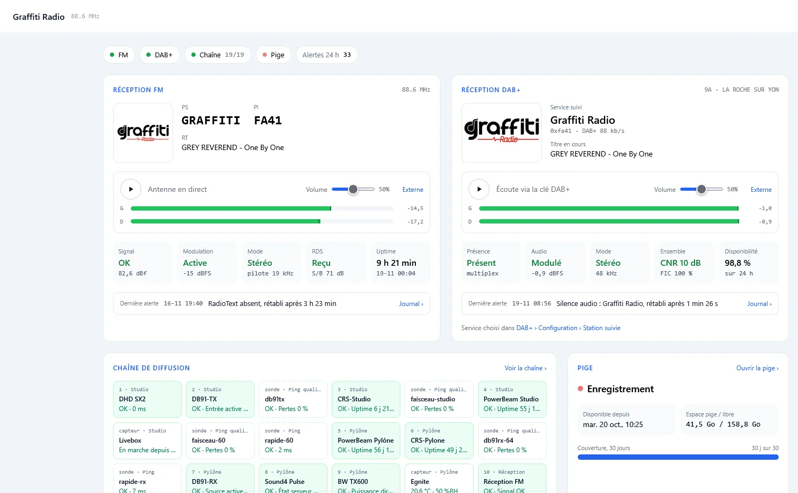
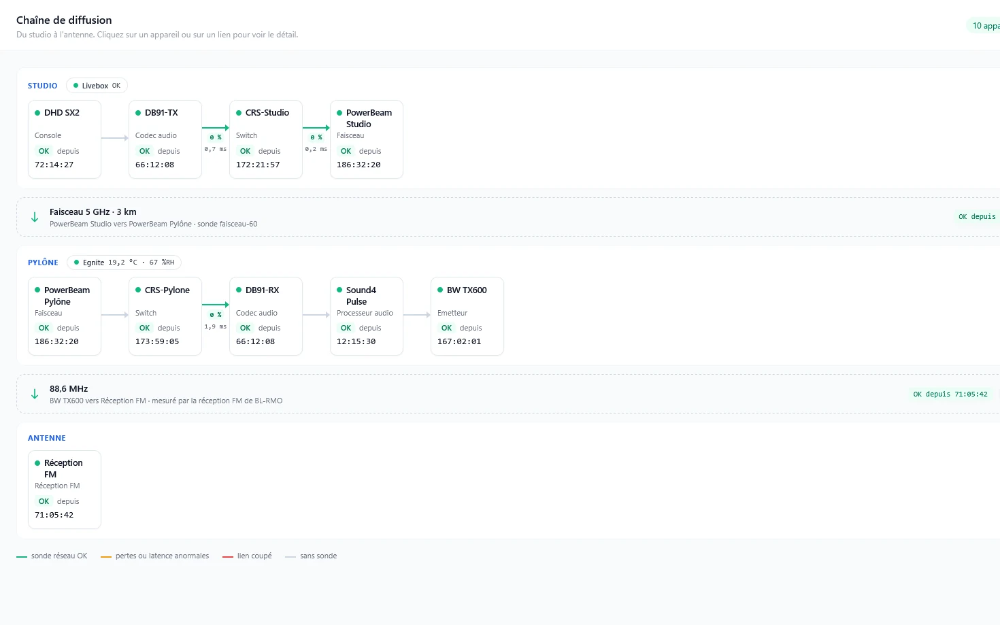
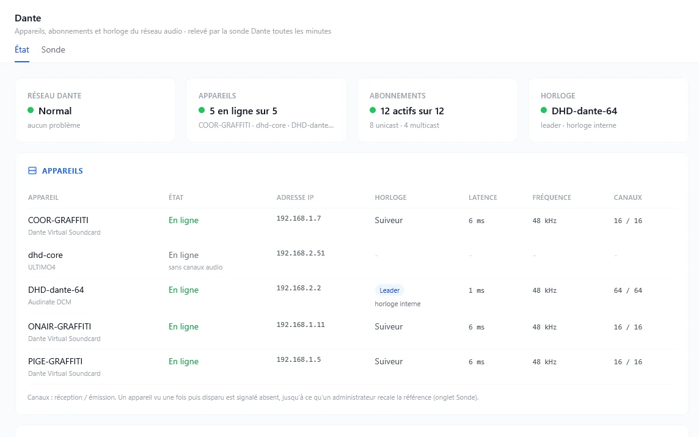
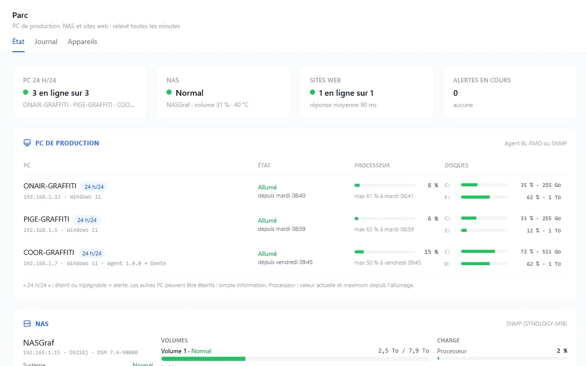
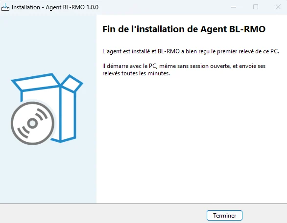

Voici BL-RMO.Meet BL-RMO.
Sachez avant vos auditeurs que quelque chose a décroché.Know before your listeners that something dropped.
BL-RMO surveille toute la chaîne d'une radio, du studio jusqu'à l'antenne : réception FM et DAB+, console, codecs, faisceau, émetteur, réseau Dante et PC du studio. Une seule page pour voir que tout va bien, un mail dès que ce n'est plus le cas. BL-RMO watches a radio station's whole chain, from the studio to the air: FM and DAB+ reception, console, codecs, STL, transmitter, Dante network and studio PCs. One page to see that everything is fine, an email as soon as it is not.
Libre sous licence MIT, auto-hébergé sur un mini-PC Linux, en français et en anglais. Conçu et utilisé chaque jour à Graffiti Radio, La Roche-sur-Yon. Free software under the MIT licence, self-hosted on a Linux mini PC, in French and English. Built and used every day at Graffiti Radio, La Roche-sur-Yon, France.

Du micro à l'auditeur, chaque maillon a un œil dessus.From microphone to listener, every link is watched.
BL-RMO suit le signal dans l'ordre où il voyage. Quand un maillon lâche, on voit tout de suite lequel, et pas seulement qu'il n'y a plus de son. BL-RMO follows the signal in the order it travels. When a link fails, you see which one straight away, not just that the sound is gone.
-
StudioStudio
PC de diffusion et de pige, NAS et sites web. Un agent sur chaque PC Windows envoie son état toutes les minutes.Playout and logger PCs, NAS and websites. An agent on each Windows PC reports its state every minute.
-
Dante
Appareils, abonnements, horloge et niveaux par canal : qui reçoit quoi, et si le signal passe.Devices, subscriptions, clock and per-channel levels: who receives what, and whether signal flows.
-
Console et codecsConsole and codecs
État en SNMP, journaux syslog et traps des appareils, flux web écouté.SNMP status, syslog and traps from each device, web stream checked.
-
Faisceau et émetteurSTL and transmitter
Liaison studio-émetteur, émetteur, capteurs du site : température, humidité.Studio-to-transmitter link, transmitter, site sensors: temperature, humidity.
-
AntenneOn air
Réception FM et DAB+ comme un auditeur : signal, RDS, stéréo, silences, écoute en direct et pige 24 h sur 24.FM and DAB+ received like a listener: signal, RDS, stereo, silence, live listening and a 24/7 logger.
Une perte de signal, un flux coupé, un PC éteint, un appareil qui ne répond plus : un mail part aussitôt, et un autre quand tout est rétabli.Lost signal, a stream down, a PC off, a device not answering: an email goes out at once, and another when it is back.
Une page par domaine, toujours à jour.One page per domain, always up to date.
La chaîne de diffusion, le réseau Dante et le parc ont chacun leur page, avec leur état, leur journal et leurs alertes. Cliquez sur une capture pour l'agrandir.The broadcast chain, the Dante network and the assets each have their own page, with status, log and alerts. Click a screenshot to enlarge it.



Un agent pour les PC Windows, installé en une minute.An agent for Windows PCs, installed in a minute.
Il remplace SNMP sur les PC du studio et lit aussi le réseau Dante. Pas de SNMP à activer, aucun port ouvert sur le PC.It replaces SNMP on studio PCs and also reads the Dante network. No SNMP to enable, no port opened on the PC.
Ajouter le PC dans BL-RMOAdd the PC in BL-RMO
Page Parc, relevé « Agent BL-RMO » : BL-RMO crée le jeton du PC, à copier.Assets page, "BL-RMO agent" reading: BL-RMO creates the PC's token, ready to copy.
Lancer l'installeur sur le PCRun the installer on the PC
Indiquer l'adresse de BL-RMO et coller le jeton. Le reste se fait tout seul.Enter the BL-RMO address and paste the token. The rest is automatic.
Vérifier le premier relevéCheck the first report
L'installeur confirme que BL-RMO l'a reçu. Les modules (système, Dante) se règlent ensuite depuis BL-RMO.The installer confirms that BL-RMO received it. Modules (system, Dante) are then set from BL-RMO.
Télécharger l'agentDownload the agent (Windows 10 et 11, 64 bits)(Windows 10 and 11, 64-bit)

Installer BL-RMOInstall BL-RMO
Ce qu'il fautWhat you need
- Un mini-PC sous Debian 13.A mini PC running Debian 13.
- Pour la FM : un tunerFor FM: a Headless TEF Lite SE et une antenne extérieure. tuner and an outdoor antenna.
- Pour le DAB+, en option : une clé RTL-SDR et une antenne bande III.For DAB+, optional: an RTL-SDR dongle and a band III antenna.
- Pour la chaîne : des appareils joignables en SNMP, ping ou HTTP.For the chain: devices reachable over SNMP, ping or HTTP.
Trois commandesThree commands
# récupérer le script, le relire, le lancerget the script, read it, run it
curl -sSL https://raw.githubusercontent.com/LyonelB/BL-RMO/main/install.sh -o install.sh
less install.sh
bash install.shLe détail est dans leDetails are in the README.